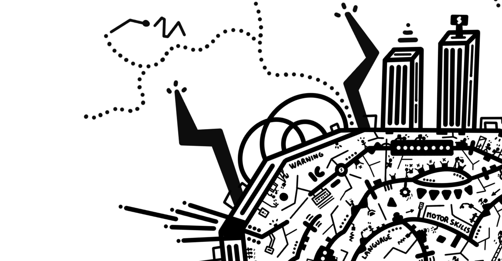
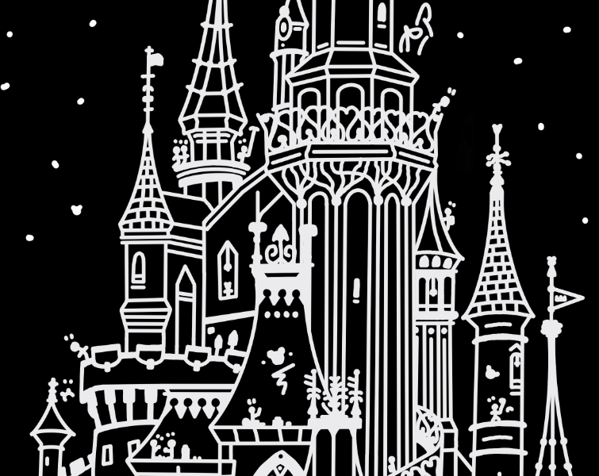
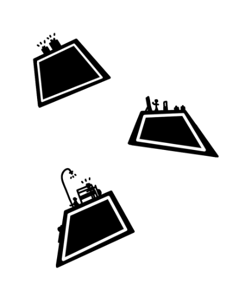
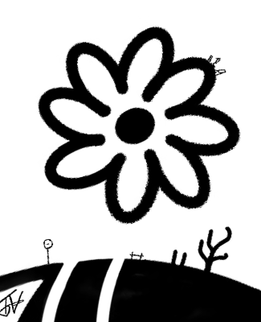

Student in master Ing. industrial at ECAM. I fully invest in all the projects I
undertake with the aim of exceeding expectations and pushing boundaries. My professional goal is to combine my
technical and artistic skills.
Étudiant en master Ing. industriel à l'ECAM. Je m'investis
pleinement dans
chaque projet que je réalise avec la volonté de dépasser les attentes et repousser les limites.
Mon objectif professionnel est d'allier mes compétences techniques et artistiques.
Okbots ExpeditionOkbots Expedition-Development announcementAnnonce de développement
Okbots Expedition is a narrative platformer game project produced on Unreal Engine 5.
The okbots, intelligent machines created by humans, were sent to explore another potentially
habitable solar system. The okbots learned a lot from their journey and claimed the explored territories.

After many years, humans decided to deactivate them. But the task is not easy as these robots have become
independent. Your role will be to penetrate their civilization and prevent them from surpassing humanity.
Project development since 2022. Graphic design, programming, gameplay, and audio design are all done
personally.
Okbots Expedition est un projet de jeu de type plateforme narratif produit sur Unreal Engine 5.
Les
okbots, des machines intelligentes créées par les humains, avaient été envoyées pour explorer un autre
système solaire potentiellement habitable.Les okbots ont beaucoup appris de leur voyage et ont revendiqué
les territoires explorés.
Après de nombreuses années, les humains ont pris la décision de les désactiver. Mais la tâche n'est pas
aisée
tant ces robots sont devenus indépendants. Votre rôle sera de pénétrer leur civilisation et de les
empêcher de dépasser l'humanité.
Développement du projet depuis 2022. Le design graphique, la programmation le gameplay, le design
audio sont réalisés de manière personnelle.
Connected CityConnected City - Production 2025Production 2025
Discover a unique graphic representation of the brain and its structure, accompanied by the okbots.
Tirelessly, they work to ensure the proper functioning of each of its parts.
From a distance, the shape of the brain is clearly distinguishable, surrounded by a dense network of nerve
and electrical connections. Up close, it reveals a veritable anthill of okbots hard at work in each area
of the brain, faithfully depicted to remain true to anatomical reality.

The main goal was to infuse the artwork with energy through the lightning bolts and electrical connections
emanating from the brain. The black-and-white contrast applied to one half of it brought both a sense of
stability and a strong visual depth. Over 5,000 strokes were drawn, representing roughly 30 hours of work.
Découvrez une représentation du cerveau et de sa structure dans un style graphique unique,
accompagnée par les okbots. Infatigables, ces derniers s’activent pour assurer le bon
fonctionnement de chacune de ses parties.
Avec une vue d’ensemble, la forme du cerveau se distingue clairement, entourée d’un réseau dense de
connexions nerveuses et électriques. En s’approchant, on découvre une véritable fourmilière d’okbots à
l’œuvre, s’affairant dans chacune des zones du cerveau, fidèlement représentées pour rester en accord avec
la réalité anatomique.
L’objectif principal était d’insuffler du dynamisme à la création grâce aux éclairs et aux connexions
électriques émanant du cerveau. Le jeu de contraste noir et blanc sur l’une des moitiés a permis
d’apporter à la fois une impression de stabilité et une profondeur visuelle marquée. Plus de 5 000 traits
ont été réalisés, pour un travail total d’environ 30 heures.
Famous castleFamous castle - Production 2025Production 2025
Discover the castle reimagined in a unique graphic style, where the okbots seem willing to do
anything
to reach the very top.
While the drone show is in full swing, the robots appear to have taken over the castle, relentlessly
trying
to climb to the summit by any means necessary. But what are they really trying to achieve?

Inspired by the original dimensions, this project was a real challenge: simplifying the wealth of details
while preserving the geometry and depth, in order to deliver a simplified yet faithful vision.
The goal was to maintain the identity and design consistency of the creations. In total, over 4,000
strokes
were drawn, representing around 50 hours of work.
Découvrez le château revisité dans un style graphique unique, où les okbots semblent prêts à tout
pour atteindre le sommet.
Tandis que le spectacle de drones bat son plein, les robots semblent avoir envahi le château, s’acharnant
à atteindre le sommet par tous les moyens. Mais que cherchent-ils vraiment à accomplir ?
Inspiré des dimensions originales, ce travail a représenté un véritable défi : epurer la richesse des
détails tout en préservant la géométrie et la profondeur, afin d’offrir une vision simplifiée mais fidèle.
L’objectif était de conserver l’identité et la cohérence du design des créations. Au total, plus de 4 000
traits ont été réalisés pour un travail d’environ 50 heures. »
Inspired by Sleeping Beauty Castle (Disneyland Paris), non-commercial
Inspiré du Château de la Belle au Bois Dormant (Disneyland Paris), usage non
commercial
The Electronic BrainThe Electronic Brain - Production 2021Production 2021
Discover a unique graphic representation of the brain and its structure, accompanied by the okbots.
Tirelessly, they work to ensure the proper functioning of each of its parts.
From a distance, the shape of the brain is clearly distinguishable, surrounded by a dense network of nerve
and electrical connections. Up close, it reveals a veritable anthill of okbots hard at work in each area
of the brain, faithfully depicted to remain true to anatomical reality.
The main goal was to infuse the artwork with energy through the lightning bolts and electrical connections
emanating from the brain. The black-and-white contrast applied to one half of it brought both a sense of
stability and a strong visual depth. Over 5,000 strokes were drawn, representing roughly 30 hours of work.
Découvrez une représentation du cerveau et de sa structure dans un style graphique unique,
accompagnée par les okbots. Infatigables, ces derniers s’activent pour assurer le bon
fonctionnement de chacune de ses parties.
Avec une vue d’ensemble, la forme du cerveau se distingue clairement, entourée d’un réseau dense de
connexions nerveuses et électriques. En s’approchant, on découvre une véritable fourmilière d’okbots à
l’œuvre, s’affairant dans chacune des zones du cerveau, fidèlement représentées pour rester en accord avec
la réalité anatomique.
L’objectif principal était d’insuffler du dynamisme à la création grâce aux éclairs et aux connexions
électriques émanant du cerveau. Le jeu de contraste noir et blanc sur l’une des moitiés a permis
d’apporter à la fois une impression de stabilité et une profondeur visuelle marquée. Plus de 5 000 traits
ont été réalisés, pour un travail total d’environ 30 heures.
The ISSL'ISS - Production 2021Production 2021
Discover the International Space Station, now under the control of the okbots… who, apparently, have not all
completed the proper training.
From afar, this famous scientific station orbiting the Earth is easily recognizable, known for numerous
breakthroughs, particularly in the scientific field. Upon closer inspection, it becomes clear that it now
has far more crew members than usual… and that humans are no longer in charge.
Special attention was paid to the depiction of the arrangement of the different modules, respecting their
actual relief while simplifying them to preserve graphical coherence. About 30 hours of work and over
7,000 strokes were required for this creation.
Découvrez la Station spatiale internationale, désormais sous le contrôle des okbots… qui, visiblement, n’ont
pas tous suivi la formation adéquate.
De loin, on reconnaît sans difficulté cette célèbre station scientifique en orbite autour de la Terre, à
l’origine de nombreuses avancées, notamment dans le domaine scientifique. En s’approchant, on constate
qu’elle compte bien plus de membres qu’à l’ordinaire… et que ce ne sont plus des humains aux commandes.
Une attention particulière a été portée à la représentation de l’agencement des différents modules, en
respectant leur relief réel tout en les simplifiant afin de préserver la cohérence graphique. Environ 30
heures de travail et plus de 7 000 traits ont été nécessaires à cette réalisation.
The Gift AgencyThe Gift Agency - Production 2020Production 2020
Discover the gift distribution agency in a unique graphic style, alongside the okbots. The delivery time has
finally arrived.
The illustration adopts a two-dimensional perspective: from afar, a flying mountain of gifts distributes
presents to the okbots through various channels. Up close, you can catch some okbots climbing the mountain
to grab their gifts early, while others are already having fun testing their new finds!

Over 4,000 strokes were made, totaling 15 hours of work. Special attention was given to the "3D" effect of
the gift mountain, notably through the use of dark zones, creating multiple "layers" of depth in this 2D
illustration.
Découvrez l’agence de distribution de cadeaux dans un style graphique unique, aux côtés des okbots. L’heure
de la livraison a enfin sonné.
L’illustration adopte une perspective en double dimension : de loin, une montagne volante de cadeaux
distribue, par différents conduits, les présents aux okbots. En s’approchant, on peut surprendre certains
okbots en train de grimper sur la montagne pour récupérer leurs cadeaux en avance, tandis que d’autres
s’amusent déjà à tester leurs nouvelles trouvailles !
Plus de 4 000 traits ont été réalisés, pour un total de 15 heures de travail. Une attention particulière a
été portée à l’effet « 3D » de la montagne de cadeaux, notamment grâce au choix de zones noires, créant
plusieurs « couches » de profondeur dans cette illustration en 2D.
White House RunWhite House Run - Production 2020Production 2020
That’s it, the race at the White House is launched. Who will manage to take the
American flag first ? What is certain is that the winner will be the fastest.
To discover and fully admire the creation, it is necessary to enlarge the image to discover several events
that are happening as well as to observe different blinks that slipped inside.
Ç'est parti, la course à la Maison Blanche est lancée. Qui parviendra à s’emparer du
drapeau américain en premier ? Ce qui est sûr, c’est que le vainqueur sera le plus rapide.
Pour découvrir et admirer pleinement la création, il faut agrandir l’image pour découvrir plusieurs
évènements qui sont en train de se produire ainsi que pour observer différents clins d’œils qui s’y sont
glissés à l’intérieur.
Summer TimeSummer Time - Production 2020Production 2020
The holidays began for the okbots. It seems that one of the families found a secluded
beach! How lucky to have a piece of beach just for yourself!
Watch out for the tourist boats that sail along the coast and the storm that looms over the horizon! It is
necessary to increase the size of the image to take full advantage of the creation by discovering the
different situations and events that are taking place.
Les vacances ont débutés pour les okbots. Il semblerait qu'une des familles aient
trouvés une plage isolée ! Quelle chance d'avoir un bout de plage rien qu'à soi !
Attention aux bateaux touristiques qui longent la côte ainsi qu'à l'orage qui se profile à l'horizon
! Il faut augmenter la taille de l'image pour profiter pleinement de la création en découvrant les
différentes situations et évènements qui sont en train de se dérouler.
Yin YangYin Yang - Production 2020Production 2020
The very first creation of the series «The Okbots» is here. Released on June 10, 2020, it represents the
emblematic symbol of Yin Yang under a new perspective with the appearance of a city full of life.

To discover and fully admire the creation, it is necessary to enlarge the image to discover several events
that are happening as well as to observe different blinks that slipped inside.
La toute première création de la série « The Okbots » est ici. Sortie le 10 juin 2020, elle représente le
symbole emblématique du Yin Yang sous une nouvelle perspective avec l’apparition d’une ville remplie de vie.
Pour découvrir et admirer pleinement la création, il faut agrandir l’image pour découvrir plusieurs
évènements qui sont entrain de se produire ainsi que pour observer différents clins d’œils qui s’y sont
glissés à l’intérieur.